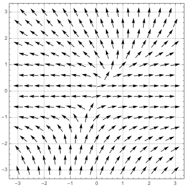

Imagine you are hiking on a hill. The gradient is the steepest way to climb the hill. In this case, the hill is a surface with an \(x\) and \(y\) coordinates, and the elevation \(h\) would be a function of \(x\) and \(y\text{.}\) The gradient of \(h\text{,}\)\(\nabla h(x,y)\text{,}\) points in the direction of steepest ascent.
If you are standing on the hill at the location \((4,4)\) and you know that \({\nabla h(4,4) = (2,7)}\text{,}\) then which direction should you go to take the steepest path up the hill?
Why do the two peaks of the function correspond to points on the gradient field plot where the surrounding arrows are pointed inwards towards those points?
Recall that the gradient is always perpendicular to the level curves. (A level curve of a function is where the function value is equal to the same constant everywhere along that curve.) Let’s explore why this is true, using the function \({f(x,y) = xy}\) graphed below on the left, and the contour map showing the level curves with the gradient field plotted below on the right.
To see why the gradient is always perpendicular to the level curves, let’s take a particular contour line and zoom in. For example, let’s take the contour line where \({f(x,y) = 2}\text{.}\) We know \(\nabla f\) points in the direction in which \(f\) increases the most rapidly, so we can think of this direction in two ways:
Either way, you’re trying to maximize the rise over run of \(f\text{,}\) either by maximizing the rise as in method on the left, or minimizing the run as in method on the right.
The divergence is the flux density, or the amount of flux (flow) entering or leaving a point. In other words, it’s the tendency of a field to flow outward (positive divergence) or inward (negative divergence) to a point. So it’s almost like what happens on average around that point. A source would have a positive divergence, a sink would have a negative divergence.
Take the following field \(\vec F = (2x-y,y^2)\) shown below:

If we imagine placing particles on a grid covering the plot as shown on the bottom left, and press ``Play’’ so that the particles ``flow" along the trajectory of the arrows, then regions that tend to become less dense (i.e. the particles scatter or ``diverge’’) have a positive divergence. Regions that tend to become more dense (i.e. the particles collect and attract in this region) have a negative divergence. The picture below on the right shows the particles after a second of ``flow’’ along the vector field.
Note that we can also visualize divergence in 3 dimensions. However, we can calculate the divergence in any dimension, it just doesn’t have a nice picture to go along with it.
The curl is the ``circulation density" of your field. Imagine sticking a propeller in the middle of your vector field. The curl is the tendency of the propeller to be turned by the vector field (think torque), and the propeller will turn in the direction of your curl.
We could also imagine making a cup of tea. The faster you stir the tea in your teacup, the larger your curl. And a tiny propeller will turn in the direction of that curl as well.
A conservative field is ``fair," that is the amount of work to move between two points is the same no matter what path you take. So in other words, if you go from point \(A\) to point \(B\text{,}\) the amount of work you ``put in’’ is the same you ``get back’’ by going back from point \(B\) to point \(A\text{.}\) Gravity for example is conservative - you might need to work to get up a hill, but you get the same amount of work back (or a ``free ride’’) falling back down the hill.
Wrap your fingers of your right-hand around so the curve inward, and your thumb will point in the direction of the curl (by convention). So if the curl indicates motion in the counter-clockwise direction, is the curl positive or negative?
As we saw, the divergence of the curl of a field is always 0. Let’s take a look at why this is true in 2 dimensions - picture a very small circular disk. The curl of the field is the part of the field that ``rotates’’ an object around the center of the disk. If we picture fluid on a grid within the disk, the curl measures the rotational part of field within the disk. Note, that the rotational part of the field doesn’t have anything to do with carrying the fluid out of the disk.
Imagine again that we’re making tea. Initially you fill your teacup with hot water, and put your teabag inside. Over time, the water starts getting darker. That is, the tea is starting to diffuse. The laplacian tells you how homogeneous your mixture is. Over time the tea will become more and more ``well-mixed’’, that is more and more homogenous, and your laplacian will get smaller.
The Laplacian of a function \(f\) is the divergence of the gradient of \(f\text{,}\) that is \({\nabla \cdot \nabla f}\text{.}\) It’s kind of like a second derivative (how your function bends at a point).
So let’s look at some hills, and let’s look at the lowest point at that hill to be our point (a local minimum). The direction of steepest ascent is uphill everywhere around that point, so the gradient field of \(f\) at the local minimum will have the arrows pointing outward, or away from out point. If we picture that field, the point looks like a source. So will the divergence be large at this point, or small at this point? Will it be positive or negative or zero?
Now take the highest point on our hill (a local maximum). Everywhere around that point is lower than our point, so direction of steepest ascent will point inwards, towards our point. If we picture the gradient field, our point will look like a sink. Will the divergence be large at this point, or small at this point? Will it be positive or negative or zero?
Let’s look at the analogous 2-dimensional calculus example of the second derivative. The graph below has a local maximum at \(x=0\) and a local minimum at about \(x=2\text{.}\)
So the Laplacian is measuring a ``change in change’’. When the field goes from a small amount of change at one point, to a huge amount of change at another point, the Laplacian will be large (there is a large change in change). When the field is changing by amount the same amount as points nearby, the Laplacian will be small (there is a small change in change).